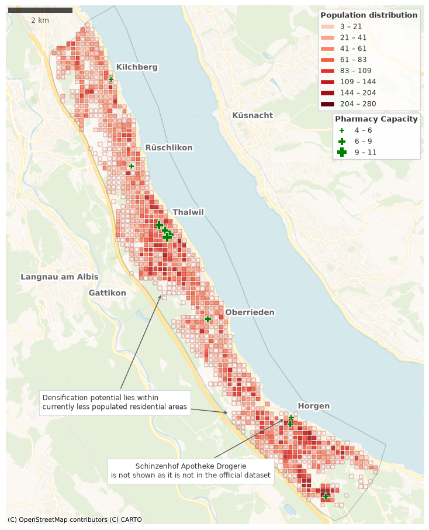
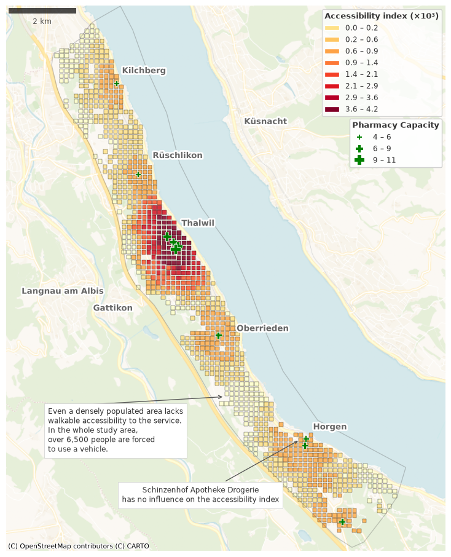
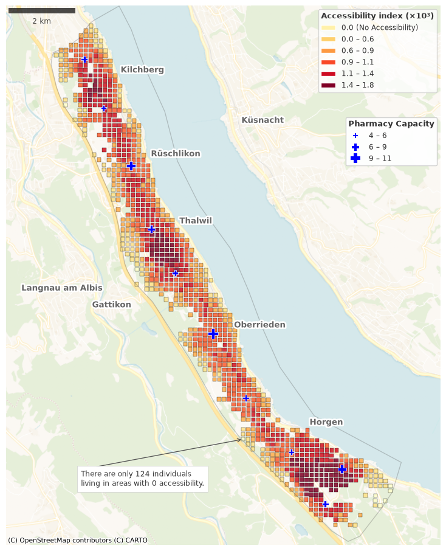
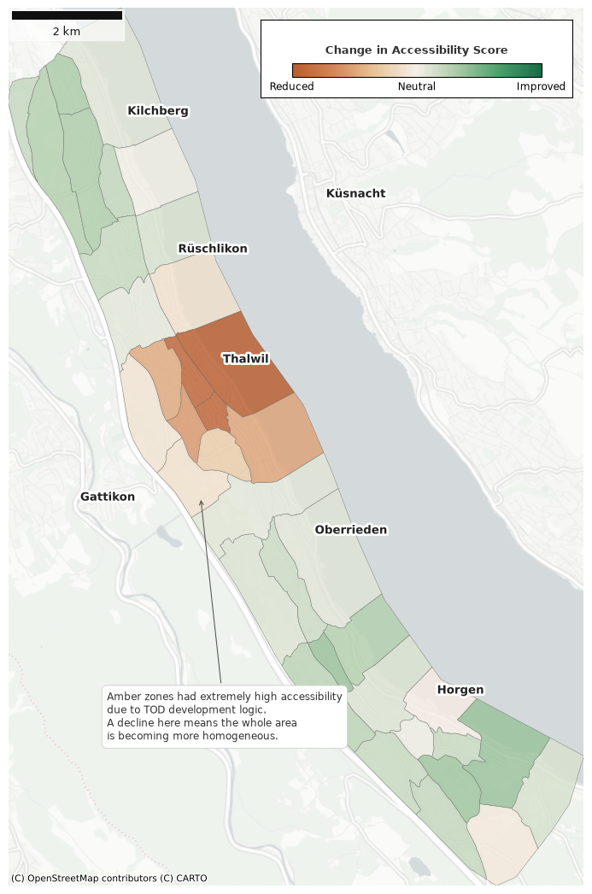

The era of Transit-Oriented Development (TOD), centered strictly around major transit hubs, is evolving into a decentralized, human-scale urban design. We are transitioning toward the “15-Minute City” (FMC), where life is organized not around a commute, but around local, self-sufficient neighborhoods.
Community pharmacies are more than medical suppliers; they represent essential centers of activity vital for neighborhood well-being and spatial equity. Ensuring their proximity is a cornerstone of creating inclusive and resilient urban environments.

Currently, restricted walking access reduces the quality of life, creating “pharmacy deserts” that force residents into motorized transport for basic needs. Accessibility in this context is defined as a supply-demand ratio weighted by distance, where the availability of services (supply) is balanced against the number of potential users (demand) and discounted by the cost of travel between them. This is particularly critical for a “silver society,” where an aging population faces unique challenges in mobility and safety.
Increasing urban densification requires a fundamental rethinking of how we distribute services. Rather than a burden, growth offers the feasibility of new ideas, such as using the Two-Step Floating Catchment Area (2SFCA) accessibility measure to optimize infrastructure for a more equitable future.

Our research into the proposed relocation of pharmacies proves it is spatially possible to eliminate the need for motorized transportation for this essential activity. In our case study, strategic relocation reduced the number of residents requiring a car from over 6,500 to just 124.

By bringing essential services to the people, we can reduce traffic in overloaded locations, slashing transport-related distances for these trips from over 11,000 km to just 224 km. This transition from cars to active mobility is the key to reducing noise, pollution, and road congestion in our cities.
The Population-Weighted Raster Average reflects the actual experience of residents. By calculating accessibility at a 100m raster level and weighting it by where people live, the zonal summary accurately represents the true average accessibility experienced by a resident in that zone.
